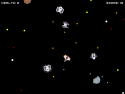
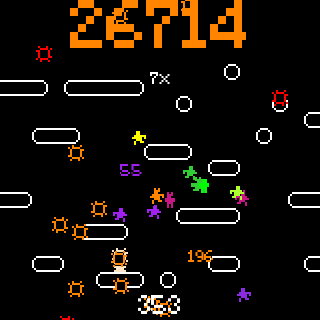

Alex Gestwicki's Portfolio
Shippy
This is a simple space shooter written in HTML and JavaScript, based on Dr. Andy Harris' simple JavaScript game engine. You can play the game on my Itch page.

Hidden Foes
A collection of 100 homebrew monsters for Dungeons & Dragons. Each monster's data is stored as a YAML file. A Python program parses the YAML into a LaTeX document for human use. Check it out on my Itch page.
OVERKILL: the goblin way
A single-player beat-em-up style video game created in Godot game engine. Once again, you can play the game at my Itch page.

Tic Tac Toe
A simple game of tic-tac-toe, programmed entirely in browser-side JavaScript and HTML. You are the X's. Play by clicking on the grid to the left!